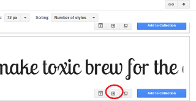
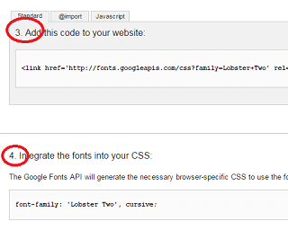

Webフォントサービスを比較
WEBフォントを利用する際、一般的にはGoogle無料フォントの「Noto Fonts」などをダウンロードしてサイトにアップロードし、CSS側で「@font-face」を指定することで使用することができます。
けれども、自分で設定するにはサブセット化などで複雑な作業が必要になるため、Webフォントの配信サービスを利用するのが便利です。サービス提供元のサーバーからフォントが配信されるため、フォントの表示までにタイムラグが発生するデメリットはあるものの、初心者の方でも簡単に利用することができます。
人気のWebフォントサービスには、「Google Fonts」やモリサワの「TypeSquare」、あるいは「Adobe Fonts」などがあります。
Google Fontsの使い方
英語サイトでWEBフォントを簡単に使用する際にはGoogle Fontsを利用するのが便利です。
日本語フォントの場合、サブセット化しないと容量が多くて微妙ですが、アルファベットや数字のみの英語ならフルセットで使用してもそれほど気にはならないかと思います。
外部CSSを利用する形にはなりますが、上記のように自分でフォントファイルをサーバーにアップロードする必要がなく、HTML側でグーグルフォントの外部CSSを指定し、CSS側で使いたいfont-familyを指定するだけで簡単に利用することができます。
使いたいフォントを選び、「Quick-use」の箇所をクリックすると詳細が表示されます。

１番目と2番目の箇所でboldなどの使用するタイプを選択しますが、選びすぎるとサイトの表示が重くなります。右側にメーターが表示されていますので参考にするとよいでしょう。
３番目に外部CSSの箇所を指定するhtmlタグが表示されますので、そのフォントを使いたい全てのページのhtmlファイルのheadタグ内に貼り付けます。

４番目にfont-familyが表示されていますので、こちらは元からあるCSS側で使いたい箇所に指定します。
順番としては元からあるCSSよりも、グーグルフォントの外部CSSが先に読み込まれるようにした方がよいと思いますが、どちらでもきちんと表示されていました。英語サイトを構築する場合や、サイトロゴをアルファベットで記述している場合は使ってみるとよいかもしれません。
モリサワのWebフォントサービス「TypeSquare」
最近では上記のGoogleフォントにも日本語フォントが登場してきましたが、英語フォントと比較するとまだ数は少ない印象があります。
その点、美しい書体で定評のある老舗メーカーの「モリサワ」なら日本語のWEBフォントが充実しています。モリサワのWEBフォントサービスには「TypeSquare」がありますが、「スタンダードプラン」なら無料でも利用することができます。
概ね、WordPressなどのCMSを利用している場合は「スタンダードプラン」を利用している人が多いのかもしれません。「TypeSquare」公式サイトのスタンダードプランの場合、「月1万ページビュー」や「1ドメイン」までといった制限はありますが、無料でも利用することができます。
一方、エックスサーバーやシックスコアでは、このモリサワのWEBフォントを「月間7.5万PV」まで、利用可能ドメイン数が「3ドメイン」まで無料で利用できます。また、さくらインターネットの「スタンダードプラン」以上でも同様に利用することができます。
モリサワのWEBフォントを検討する際、上記のレンタルサーバーについても検討されてみるとよいでしょう。
■公式サイトのセルフホスティングプラン
公式サイトの「セルフホスティングプラン」では、あらかじめ必要な文字をサブセット化して使用することもできます。
サイトのHTMLとCSSを圧縮してアップロードすると、必要なフォントのみでサブセット化されたデータが作成されます。そのデータをサーバにアップロードして使用すれば、フォントの表示の遅延などのデメリットは解消されるかもしれません。
ただ、スタンダードプランでも「サイト内に必要な文字が自動検知され」とありますので、これがサブセット化されて配信される意味なのかは不明ですが、表示の速さについてはそれほど大きな違いはないものと思います。
当サイトでご紹介しているような、HTMLとCSSで静的なホームページを作成している場合には「セルフホスティングプラン」もメリットがあるかもしれませんが、サイトを更新するたびにサブセット化しなおす必要があるため、こちらは更新頻度の少ないサイト向けかもしれません。
■Adobe Fontsはどうなのか？
そのほか、アドビにもWEBフォント「Typekit」があります。当サイト運営者は使用したことがないため詳細は不明ですが、チェックされてみるとよいでしょう。